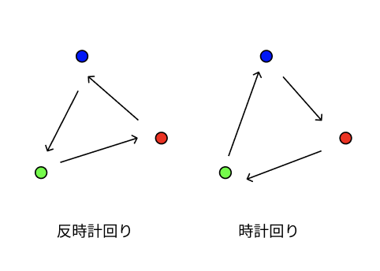

3 つの点には回転方向を定義できます。 点列が右回りか、左回りか、という違いが、幾何学計算上では重要です。 右回りのとき時計回り（Clockwise）、左回りのとき（Counter clockwise）と呼びます。 Counter clockwise の略記が ccw です。 ccwという略記はs2のリファレンスの中によく登場しますので覚えておきましょう。
下の図中の点列「緑→赤→青」は左回り、反時計回り、Counter clockwise、ccw。 点列「青→赤→緑」は右回り、時計回り、Clockwise。

ところで、なぜ点列の回転方向が幾何学計算上では重要なのでしょうか？
点列の回転方向により、多角形の表の裏が定義できるからです。これについては、後で説明します。